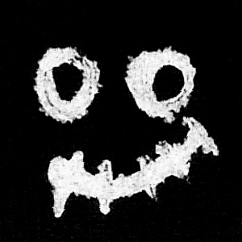

Drew Linky
7th of January 2026
My decision to explain the Slur Accords late last year proved somewhat prescient: at least once every day there’s someone who asks whether a given term is still permissible per the Slur Accords, even though they were never really intended to be taken as definitive restrictions or permissions. Nonetheless, after seeing this occur for months on end, the current mod team initiated a small discussion on it, especially Lyra and Soc. They pointed out the other issue I mentioned as well, being the use of slurs in people’s nicknames. They seemed to have the same viewpoint I do, which is that while not really a moral wrong, it’s still unsavory and gives the place a bad image.
After a few comments that were going nowhere fast, I made a suggestion that–whatever it was they wanted to see in #general–they needed to come up with a cohesive statement and pin it, for clarity and visibility. I feel like the advice was fine, although the end result was maybe a bit hasty:
It has come to our attention that there has been some confusion over the past few months regarding slur usage, so just to clear things up:
- The slur accords are officially no longer in effect.
No more slurs in nicknames, we are still a Discord partner and as such we need to project a decent image.
I call this hasty because longtime users instantly pointed out that the latter point sounds remarkably close to an ancient reference to Max Mikester, which I have somehow neglected to describe in this document at any point. The phrase “CONDUCT UNBECOMING” was exceedingly popular for years, used for mocking people who made any earnest appeal which had no higher basis than “we need to keep up our appearance as a server so that people can’t accuse us of unbecoming conduct.”
It’s still the predilection of most older users to simply not care about how we appear to others, although this attitude has been diluted over the years. I believe Soc is newer and may be forgiven for not recognizing it when they put up the pin, but people such as Enn immediately latched onto it and made fun of them. WoC eventually appeared and also mocked it, eventually replacing it with his own message: “dont put slurs in ur username or i kill you thank.” He has always been more fond of the direct approach, which in my opinion only works as well as it does for him because he has a king’s own arrogance. Still, I have to recognize his results.
Nothing more for today.
11th of January 2026
I feel like talking about the server’s numbers today, it’s been a while since I’ve described them in this journal and the situation has changed rather dramatically in the last couple years. I used to endure some ribbing from people about being overly worried over server activity, and though the sense of worry isn’t quite as sharp it’s still a bit concerning.
The HSD’s activity has been on a slow but general decline ever since the COVID pandemic caused it to resurge, we were seeing daily message counts in the 10,000-20,000 range back then but in 2025 it fell to a bit below 10,000 per day on average, often enough poking over that figure. However, the HSOD’s creation marked a significant change: their total activity is insane, and at least some of that is directly from draining #altgen and #homosuck because they have a more shitposting friendly atmosphere (I believe so, anyway. I don’t routinely check to see what it’s like). The #mspa-forums were also siphoned rather drastically, and so after the initial bump from the news in August our activity has fallen much closer to 5,000 messages a day, often below that figure.
Like I said, this doesn’t inspire the same feelings of dread or anxiety that used to plague me whenever I described this overall trend. I’m much older now and often have real life responsibilities that keep me from talking in #mspa-lit even when I have something I’d like to be discussing, or I’m simply too focused on a video game. However, I’d be lying if I said I didn’t still feel some trepidation looking at the numbers for my resident channel specifically: we are now in the low-to-mid hundreds of messages per day (today’s recorded number was 174, below even the slothful #coding-tech) which is a rather precipitous fall from how it used to be even just in the first half of 2025.
I suspect that, being on average older, a lot of the rest of the channel’s denizens have fallen prey to the same increase in responsibility that I have. I wouldn’t be surprised if the state of the world politically is also kind of a damper, it certainly occupies a lot of my thoughts and puts me in a mood unfit for conversation. It may just be general drift though, at the end of the day I’m still unsure what forces compel people to talk in any given online chat. I know people are at least looking consistently–the odd funny message still gets plenty of reaction, it just doesn’t seem to promote discussion.
Something akin to this phenomenon was described in #general recently: Faeby described that it feels like people don’t treat it as a real time chat: “someone else… put it really well in that its been being treated like a twitter feed,” saying that no one is actually trying to actively talk to each other and opting to drop messages and leave it at that. The term “hug boxing” was brought up as well, though I’m not sure how true that is or what impact it’s having.
Without knowing the exact reasons why this is happening I have no effective solutions to propose. However, I do have suggestions I’m going to bring up with Makin about restructuring the server. The current layout is geared far more towards a place that’s still got tens of thousands of messages to worry about, segmenting discussion so no one place is overwhelmed, and even a couple of forums for people to generate their own threads whenever they want instead of centralizing discussion.
Rather, to an extent we now resemble the Sydlexia Discord: one or two people there have continuously requested more channels of increasingly granular purpose, even going so far as to divide discussion about media into several channels such as #book-club, #tabletop-games, #music, #tv-and-movies. Mind you that this isn’t a bad strategy in and of itself, but the Sydlexia server only has 78 members on it as of the time of writing. It’s a spread of roughly 4 people per channel, diluting an already extremely low amount of activity. The end result is executive dysfunction: I don’t know that I want to talk anywhere because it’s overwhelming to look at the server list, and I don’t feel as if my words are really being seen anyway.
With all this in mind, my suggestion is pretty simply going to be that we should reduce the number of channels we have in the server. The #gaming and #media forums are convenient for compartmentalizing discussion but what’s the point if hardly anyone is using other channels like #mspa-lit in the first place? It’s nice to have the topics of a given channel neatly defined, but in my opinion the numbers just do not justify it. The only channel with activity similar to pre-HSOD levels is #general, and for the last so many weeks it’s responsible for anywhere from a quarter to two-thirds of all activity for the day.
The other thing I’m mulling over is that the current mod team is lacking something. I can’t say what it is for sure, but there’s a certain je ne sais quoi that is causing things to feel off, although I may be influenced by a recent discussion in #general complaining about the team being unpleasant. We’ve had plenty of people who are a bit too aggressive, people who lack experience1, people without drive. I’m definitely unsure how to fix this though, it’s an extension of the same problem we’ve had for years: finding new people to be mods is a terribly difficult task.
I don’t want to harp on this too much though. Instead, to cap off the day on a more pleasant note I’ll briefly describe someone who’s been around since 2022 named Dabu. An Arab inhabitant of #general who often flits to other channels, he and I don’t share a lot of the same taste in media as far as I can tell, but he has a generally delightful demeanor no matter what he’s talking about. I believe English isn’t his first language; shamefully, for a while this led me to assume that he’s somewhat simple-minded, but that impression was belied by his natural curiosity. I see him talking and asking about movies or TV shows often enough, and if he can interface with media in a language other than his own that makes him more capable than most as far as I’m concerned. Additionally, he has a tendency to keep the #world-politics thread updated on various goings-on in the Arab world, especially with major events such as the recent unrest in Iran. These things together lead me to believe that he’s actually shrewd, and simply selective about what he decides to say.
I have literally never seen anyone complain about Dabu, and if they did I think I would feel defensive of him on principle just because he’s so nice. The other night we talked about Star Trek a little bit and he was asking about our opinions on the show’s quality between Berman or Kurtzman as series producers. After speaking in the HSD for almost a decade now I kind of take certain opinions for granted, but his transparent curiosity was a good reminder not to assume everyone knows about these things or share the same opinions. I appreciate him and I look forward to seeing what else he discovers while talking here.
Finally, something I consider rather important: I have finally cleaned up and reorganized the statistical spreadsheets for the HSD and the subreddit so that I felt more comfortable publishing them for general use. They can be found here in Appendix D, and will be updated on a biyearly basis.
Nothing more for today.
22nd of January 2026
I mentioned on the 11th earlier this month about activity slowing down, and that I had some suggestions for Makin for restructuring the server. After some thinking he didn’t agree with my ideas about removing forums, which is understandable, but he did humor me with a little restructuring of the existing channels. Typically, #general is located above #altgen but as we’ve done a couple times in the past, he moved #altgen above it to potentially catch more shitty younger users before they enter #general. This is being done with the expectation that improving channel quality will also give people more reason to talk.
On the first couple of days when Makin switched the channels there was some confusion from other mods like Starfang and WoC believing the move was in error and correcting it on their own initiative. After clarifying the matter to them, there was some light pushback from Starfang and itsy8itsy, who referred to it as a “science experiment.” This was also accompanied by one of them, probably WoC, renaming the channels to increasingly ludicrous combinations of the words “alt” and “gen.” The examples I bothered to write down were “#altaltgen” nearer to the start of the shenanigans, and then finally ending up at “#altsuperpreantegen” and “#postsubaltaltgen.” As to which was which, I don’t really think it matters.
Writing a couple of weeks after the fact, this might be having an effect. With my limited tools of analysis (and unwillingness to pay more attention than I already am) it’s impossible to tell what causal factors are actually responsible, but the activity of the server does seem to be increasing. It could simply be a delayed return to normal after the holidays, and the effect is not overly pronounced by any means. However, I’ll gladly take any improvement we can get.
Nothing more for today.
27th of January 2026
People have been asking for the last so many months about opening up a new community server for Terraria, and Makin obliged them today. It’s the only real long-running competitor to Minecraft we have, as far as “stuff people on the HSD want to play” goes. Team Fortress 2 also counts but has been featured far less than either Minecraft or Terraria, for reasons that I’m either unaware of or for no real reason at all.
As far as I understand, the pattern with Terraria is: the developer claims that they are releasing the definitive last update of the game for all time, and then about six months to a year later they announce another update that they were inspired to do for some reason. This makes for an interesting if unpredictable release cycle where the updates usually have at least a little substantive content. Makin has directly contrasted this with Minecraft, whose content updates are often somewhat disappointing because they’re mostly cosmetic in nature (Makin has gone so far as to say he won’t endorse a new Minecraft server if we put it up, which I am actually planning to do based on a request from RadioactiveUmbra).
But that’s besides the point. Terraria is the focus for the next couple of weeks, and this time around there are some strict rules to make the experience more enjoyable: only new characters are allowed. The logic here is that character saves can be transferred between world saves meaning if the character was used to beat the game previously then it will already have end-game equipment, if that makes any sense to people who haven’t played the game; the server is only open for several hours at a time instead of 24/7. The game is prone to rushing where people who are skilled at it may complete objectives rather quickly, which leads to severe problems with leaving other players behind; finally, the use of the word “pillweef” was banned “with extreme prejudice.”
This last one is an old reference to the MSPA Forums, apparently. Based on what little context I can bother to find, the forum mods didn’t like it when users insulted characters from Homestuck or other stories and would ban them for it (I’m not sure if this was ever stipulated as an actual forum rule or if it was just blatant mod abuse). As a workaround, members ended up using random, silly words like the aforementioned “pillweef2,” which are clearly not actual insults even if they sound similar. I sadly missed out on the forum experience so I have no real comment, though I often wonder what other bizarre nonsense was happening there.
As to the Terraria server: by the time of writing on the 5th of February, it seems to have been beaten handily and Makin led everyone on a “victory lap” in something called a “dual dungeons seed.” I largely was unable to play based on a real life circumstance that demanded much of my attention. Terraria isn’t my favorite game to rush playing on account of its general complexity, but I’m sure we’ll give it another go in a few years and will do my utmost to attend then.
Nothing more for today.
9th of February 2026
Starfang has been getting yelled at continuously by people for making what #general regulars and others consider somewhat questionable bans. SoC, Sung, and a couple other mods were talking about this publicly and opened a discussion on moderator quality for the server lately, which is not exactly a new subject–there are some people like Yark who are exceptionally verbal about the fact they feel the mod team does a poor job, or will at least point out specific cases they feel don’t make the cut.
However, the breach of privacy from the modchat is rather atypical. Nothing’s been said about it since the conversation in #general occurred, so it may be done for now. I fully expect it to crop back up: there’s been a recurring problem where Alice or someone else will institute a ban for a week or longer, and then someone like anas or spines will reduce the sentence unilaterally because they think it was too much. This has caused some serious problems of cohesion, and honestly I’m not sure if the mod team will last too long at this rate3. They’ve got to iron out the wrinkles or else it’s going to lead to another reckoning in record time.
I don’t have much else to say on that for now: instead I want to describe a newer user who’s been hanging around for the last several weeks. “Moodyblues,” who goes by the Homestuck character name “dave” like so many others, seems to be a chill and talented individual. I comment talented because just tonight they took the opportunity to share some works of tattoo art they’ve done which look very clean. This led to a larger discussion on tattoos members of the chat have acquired, and somehow I think it led into a larger conversation on adult life, and especially marriage.
I’ve been having a rough time in real life and the discussion reminded me of how any of us who have been around in the server for a while are all significantly older now. The fact that there’s at least three married couples running around, two with children, is a stark change from the fact that I joined the server when I was still in college. We’re all so much older now, it feels strange to look back and see this span of our lives stretching so far. I can’t even perceive myself as the same person who started writing this document, and the relationships I’ve built with the people here are both deeper and more complex than I ever expected initially. I find myself grateful for those relationships, both good and bad. I hope they can endure for a long time yet.
Nothing more for today.
18th of February 2026 - The HSD is Taken Down
At about 1:30 PM EST, we were chatting lightly in mspa-lit when Makin shared a notification he got from Discord. The screencap said that “Homestuck,” our server, had committed copyright infringement. We mused on what it could be about–immediate suggestions were the banner art, in the back of my mind I was thinking of the weekend streams–but after five minutes the entire server disappeared.
As of 30 minutes later, the entire server is still completely gone. I’ve talked with a few people independently about it, including Tensei and Alice. Some other servers I’m in with HSD people are talking about it, like Michael Bowman’s server “Bowmantown,” WoC’s private server, and a more esoteric one I don’t look at often called “Sandwich Research Center” which Enn just pinged me from. I even have a small emote server that was loosely themed around Dragon Ball Z which I barely use anymore that had a smattering of people from the HSD in it. As we figure out literally anything we’re sharing information with each other, trying to piece the matter together. Makin posted this thread on the subreddit not too long after the server evaporated. For posterity, in case the post is changed or disappears later:
I got three emails in a row saying my server "Homestuck" broke community guidelines for copyright infringement, and suddenly the server disappeared, even for me.
I think this is a troll taking advantage of an automated system, though, probably not even Hussie. I don't have any information, but I've contacted Partner support (I've been in good standing and in communications with them over the last seven or so years) and hopefully they can fix it.
I strongly doubt it got deleted for good, but I'll let you know if it is. This will be updated ASAP.
Based on the sheer rapidity of the reports, Tarty agrees that it was probably “some sort of discord report nuke.” Lyra was just fighting viciously with some shitter in #general last night or the night before whose name was Lavender. This Lavender went so far as to change her entire Discord profile and center it around calling Lyra stuff like “bitch ass skank,” which she took humorously and changed her own name to match. It’s highly unlikely this specific person decided to mass report the server and get it taken down, but the possibility is somewhat funny.
As the day has gone on, that small emote server has drastically changed: I’ve renamed it the “Temporary HSD Refuge” as it has been supplanted by more HSD people. It has ballooned from less than 20 people who got invited randomly over the years to currently 109 people including myself and Makin, all of them people who we recognized and invited through word of mouth. It actually helped to dispel some of the dread I was experiencing to see everyone come in and keep chatting energetically, sharing anecdotes from the HSD which may now be a lot of lost media. There was even some joking from Lyra: “this is why splinter servers rock because i get to talk to you guys in your full concentrated glory and dont have to interact with stupid 15 year olds every thirty minutes.” It has admittedly been refreshing not to have to deal with randoms trying to talk and making the space uncomfortable4.
Speaking at the end of the day, no news is forthcoming and my hopes for the HSD being restored are waning steadily. Alice and a few others have commented that there’s no real reason Discord should actually keep the HSD deleted, but Misha has the opposite opinion: he used to be part of the Discord server for a Youtube channel belonging to a guy called Lord Mandalore. Apparently that server experienced a similar problem to what we suspect, where it was mass reported by someone with a grudge. Misha describes that the Mandalore server “never came back5” since Discord is “picky about reports,” so we probably shouldn’t get our hopes up.
I have thus turned my thoughts toward other avenues, and have created a channel called #the-laboratory (which we actually changed to #the-labradory in keeping with the spirit of Fat Husky) whose purpose is to identify firm alternatives to Discord. My thinking is that even if the HSD is restored, there’s nothing stopping it from getting nuked again, and it would be advantageous to have something of a storm shelter to retreat to readily. I am primarily interested in alternatives which are self-hosted in order to avoid getting destroyed by the hosting service for TOS or other violations, and if it’s just a backup then it would probably benefit from being a closed space where only vetted users can enter once they’ve proven they’re not psychopaths.
I’m very lucky that I was available to quickly convert the emote server over into a more pliable Refuge and get invites out to people, but I would rather have something that’s strictly purpose-built as a robust backup. I’m actually kicking myself for not taking the initiative and getting something like that set up in the past, but we all kind of ignored the possibility of this happening for years. Even something as simple as an IRC channel where the information is readily available would have lessened the confusion of trying to get people in one spot.
Nonetheless, the current layout after some trial and error is: #announcements, #general (with a thread where I asked people to post emotes from the HSD so I can archive them), #shitposting, #bot-commands (with the temporary carl-bot, while I assume Makin doesn’t want to add Arquius to the temporary server), #the-labradory, #nu-mspa-lit, and the General voice chat. Makin, lupoCani, and I are Sheriffs while MrNostalgic, Cello, spines are server Deputies. I couldn’t tell you why I decided to call us that instead of admins and mods, I think it just made me laugh a little bit when I was making the roles.
As for a main space, I’m actually not sure what the plan is anymore. If Makin gets the HSD back then it all becomes very obvious: that space will continue to grow, and the backup can be instituted over time with less anxiety. If we don’t get the main server back then the road is very murky. Will he try to create a new space for Homestuck discussion on Discord? He’s already said that most other platforms don’t appeal to him for various reasons: they’re either of poorer quality, don’t have the capacity to attract people, or their userbase is unsavory (interestingly, he specifically mentioned that decentralized services are filled with criminals).
Without more information on the status of the HSD, I think that pursuing another space just for the oldheads is at least something to do, and I even feel it’s appropriate. It has correctly been pointed out by a few people that you need a topic or a draw in order to keep people flowing in or the space will die, so this can’t remain the Main Place so to speak. Even so, I was heartened to see people using the singular voice chat for a while today; Bolas decided to stream the last episode of The Sopranos to commemorate the HSD going down (which I yelled at him for considering the possibility of copyright infringement stemming from streaming stuff). A few of them were drinking together actually, with Canis fully passing out on call and just hanging around for something like four and a half hours. It may sound strange but that’s the kind of thing I remember enjoying in the HSD way back when, and I remain cautiously optimistic that something can be salvaged from this whole debacle.
I will end today by making a full list of all people (excluding myself) who bothered to join the Refuge, to commemorate the fact that we felt so much like speaking to each other. In alphabetical order:
ActivelyAnonymous#5079
Albe
Alice Bowman
anas?
anomalyNominally
BeeesWith3Es
Bolas
Bruhmeister
Caledfwlch
cameron
caniac76
canislupusaqua
casenvy
carlarc
Celeste
Cello
Chelvs
chloe
cookiefonster
coolGhoul
CyclopsCaveman
Dabu/Ryan
deLux
demetersPursuit
deus armatus
Dingus
eightball
electra.rose
faeby
fungus
GarReaper
GeorgeMacaa
harpyhour
hats
hb
helena
HypnoticOcelot
Ifnar
interrobang
itsy8itsy
jebbjabroni
jerryconquest
John Keel
Juli
kaliwete
Kanishka
Kidpen
Khalilah Circle
konipas
Kratospie
Kreuz
lime
Livina
lupoCani
lyranea
Makin
moodyblues
moonjail
MrNostalgic
Misha
Neth
Nero
Niklink
Nujaka Knight
OsseousArcanist
Pax Probliscum
Pinwheel.enjoyer
polygonalconstruct
PsuedoCrow
Putnam
Reti
Ricky Slugface
sacrosapphic
Shoda7846
Skye
Snoiper
SoC
spines
Starfang Predinova
Sung
tarty
tay
Tensei
Teratosapphic
terminalTermagant
Tetrahedron
the.enemy
thebadnut
tmtmtl30
TomatoSensei
Torimaesua
Tyzuigi
velikiy
virtuNat
Wadapan6
Wyatt224
wheals
yark
Zentoyo
zuup
(Strictly speaking, some people such as Kosh have been in my emote server for years already and not everyone spoke today. But, it was still nice to see their names on the list. Others like WoC have declined to join for various reasons, probably to see what happens with the HSD itself or just lack of interest.)
I don’t know what will come of all this, but if nothing else it means a lot that these people decided to congregate in the wake of such a hugely negative change. I’ve got some archives of the Homestuck Discord’s chat history that I’ll try to assemble and I’ll hope for the best about the return of the HSD, but the future looks very uncertain either way.
Addendum from the 22nd of February: I wasn't going to actually include it originally, but Reddit user Bananabanana700 wanted me to inform the future that they are 'special.' I will let the reader fill in the gaps on what that means.
Nothing more for today.
19th of February 2026
There has been no further news from Discord on the status of the HSD. Makin shared the screenshot of what he’s looking at:

Which one might guess is completely unhelpful. The limited research people did suggests that “limited access to servers” means that Makin can’t join servers or create them, but clearly he was able to join mine without issue. Until Discord provides more information, we are stumbling around totally in the dark.
In the meantime, the Refuge has grown somewhat. It hasn’t been such a huge influx as it was yesterday, but there’s more people and the activity is bonkers for such a small group of people. Today was literally three or four times as active as the HSD was on average with one quarter of one percent of the total number of users. Obviously that will fall off over time, but a few people have used the term “the cream of the crop,” and I can’t say I’m displeased with the current userbase.
In order to regiment things slightly more, I disabled all existing invites because people were using the original to invite friends I had no awareness of like Bruhmeister. Instead, I created another thread from #general called “Newcomer Council” where people are encouraged to nominate people and we can introduce more regulars in a somewhat orderly fashion7. This has the unfortunate effect of rendering the server a fully gated splinter, but this is ideally a temporary situation and won’t matter in another week at most.
This system, for now, seems to have made the environment more harmonious. Few people were seriously nominated that we decided no on; the most controversial pick thus far was actually Synga, who various people expressed concern about due to his temperamentality during confrontation. I initially decided to table the matter until we know more about what’s going on with the HSD itself, but afterwards Synga DM’d me on the matter. Despite obviously being hurt by the decision, his response to my explanation was rather measured and sounded genuinely contrite, so I elected to include him anyway. It’s worked out so far.
I’m weighing making more channels because of the sheer activity, though I’m struggling against the impulse of shoring up the place like it’ll be a permanent replacement. I suppose it couldn’t hurt to structure things more anyway, but there’s a niggling doubt in the back of my mind that says it will prove necessary in the end. Hopefully we can continue to pick up more regulars and keep up the spirit. Current considerations are repurposing the shitposting channel (it is largely going unused) into something else, maybe an on-topic channel? I also kind of want a second #general for overflow, because the discussion goes very quick at times, though that might just be what lit serves for. We probably could use a #serious channel if only for discussion of politics, which plenty of us care about. I’ve made a poll to gauge interest, though things will likely settle down and it won’t be needed anyway.
Finishing the day with another round of joinees:
Aiden
Angel
Ashley Sage
Cher
Civ
DefaultFormat
F1sk the person
greater james8
harper
homer
Kaisheng21
inkysquidmat
Linkslittlefriend
Magistrate
Marquise
Mistelle
Nobody9
rabbitPoster
RadioactiveUmbra
Remy
sein
Synga
TIPSY
With nothing to really back it up, I figure we have upwards of 90% of the people who were talking most when the HSD went down. We now sit at a grand total of 133 people at the time of writing. Of those, rabbitPoster is someone I’ve not described before but true to their name mostly pops in a few times a day to post a picture of a rabbit. A beloved user despite, or perhaps because of, their simplicity. Their presence offers a strange sense of normalcy that people really appreciate.
I was reminded also of an interaction we had today: the Newcomer Council (being renamed the Admissions Council for more accuracy) has been alight with suggestions since we got here. At one point the subreddit mod Harry Hinderson was brought up, and MrNostalgic had a suggestion.
For context, one of the subreddit mods is MoreEpicThanYou747, a former name for the community member Livina. I thus present the conversation unabridged:

Hoping everything turns out alright. Nothing more for today.
21st of February 2026
Small entry: no news yet. People still feel comfortable enough as a whole, the poll I put up indicated interest in a #media channel which feels somewhat appropriate, and I have thus added one. In defiance of the possibility that we were struck down for the weekend streams, we decided to watch some more stuff in the Cytube channel today (though, I note we stuck with stuff less likely to draw copyright ire), including two episodes of Jeopardy! and the famous Ugandan movie “Who Killed Captain Alex?” which proved to be both more incomprehensible and funnier than I thought possible. At the end of this, there was a string of movie titles from Uganda, though one at the end, just the titles themselves being displayed in total silence. One of the last titles just said “EBOLA” and this caught me off guard and made me laugh so hard I actually had tears coming out of my eyes.
Otherwise, with the sad admission we've lost one or two people in the last couple days, some more joinees for a grand total of 150 members:
1011686
CaptainArchmage
chickenmuncher42
Daniel111111222222
devoid_of_voltz
Harry Hinderson
Irene
Khauvinkh
kittenchilly
Lang oh. Stah
loneandlevel
mixi
MrCheeze
nekodrill
Photino1
stoneflower
sw3aterCS
theSardonyx
vR (RyuubBloke)
Nothing more for today.
CURRENT END OF ENTRIES
If you're reading this, you have reached the current end of updates for SPAT. The Homestuck Discord is still going, and I still write stuff, don't worry. The changelog will have information whenever it feels prudent for me to write, which will almost certainly be more sporadic in nature due to not wanting to cover the same topics or describe the same events repeatedly.
Support
For any of you reading this, I hope that this document has been entertaining, informative, or even both. I maintain this document for my own satisfaction and that of others, and to keep the memory of this community alive as the years go by. If you so desire to support me in this endeavor, then the link for my Ko-Fi page can be found here*. I would be immensely appreciative of any support, but this resource is first and foremost meant to be enjoyed openly and without any sort of charge so no worries either way. If I receive donations then they will first and foremost be used to cover monthly/annual operating costs for the website. Thank you for reading regardless!

Makin
1 I'm at least comforted by the fact the HSOD is adding mods that still have the "new user" badge, meaning they're desperate enough to "hire" people who have been on the server for under a week. We'll have to see how sustainable their approach is.
2 no it was part of the actual rules. you couldn't call vriska a huge bitch, you could only call her a "mean ol' duck" or "pillweef", the two exceptions
3 ironic foreshadowing
4 holy ivory tower breadman
5 ironic, he could reference star wars but not "somehow he returned" himself
6 THE wadapan?
7 THE GREATER GOOD
8 easy achievement
9 viral marketing, BRAVO NOLAN
* Drew finally sells out. Sad!